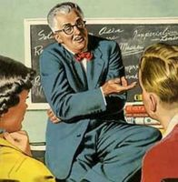
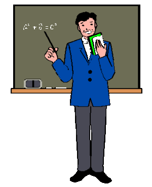
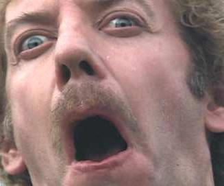

Profesor
 De: La Frikipedia, la enciclopedia extremadamente seria.
De: La Frikipedia, la enciclopedia extremadamente seria.
| De la serie fenómenos sociológicos:
|
| Profesor
|
| 
|
| "Me gusta enseñar cosas que no os servirán cuando crezcais".
|
|
| Fenómeno sociológico
|
Gilipollatum repelentis berreantis menda
|
| Principios
|
Empezamos con el tema 1.
|
| Zona de origen
|
el infierno Colegios y universidades su puta madre
|
| Consecuencias
|
Suspensos y malas notas.
|
| Símbolos típicos
|
Un cero con un redondel o subrayado.
|
| Frikismo
|
Sí, normalmente estan relacionados.
|
| ¿Gusta a la gente normal?
|
No, para nada.
|
| ¿Recomendable?
|
Depende de tus notas.
|
| Máximo exponente
|
Algüer Einsteyn
|
«Yo hago como que explico, tu haces como que atiendes, y luego escribes un papel con lo que te has aprendido. Después te pongo la nota que me sale de la punta'l'nabo. Ah, y cobro por horas»
~ Profesor definiendo su trabajo a un alumno
«No existen frases de seis palabras»
~ Profesor de literatura evocado a una clase
«Ni tampoco están inventadas las llamadas y desconocidas frases decapalabras»
~ Profesor hablando de las frases de diez palabras
«SILENCIO!!!»
~ Profesor , una palabra básica de un profesor
«Voy a empezar a hechar gente y me voy a quedar sólo»
~ Profesor enfadado cuando todo el mundo habla
«...»
~ Profesor mirándote fijamente hasta que te das cuenta de que te mira
«Me duele la garganta»
~ Profesor quejandose de su dolor de garganta, enfermedad común de los profesores
«Chiquitico, te voy a poner un parte y te voy a mandar a casíca un par de días, y nos quedamos relajaos»
~ Tu profesora de física y química
 Que su aspecto no te engañe
Conocido también como peor enemigo del alumno. Dícese de aquella persona cuyo único objetivo en esta vida es chingar joder fregar enseñar y transmitir sus conocimientos (pura mierda). Persona que nunca logro cumplir alguno de sus sueños o logrò entrar a una carrera de verdad (doctor, abogado, QFB, QI, Teibolera [en su género femenino] o músico). Vienen en varias presentaciones, tamaños y humores, a veces son empleados del gobierno o en su defecto son maestros de alguna escuela privada. La mayoría de ellos no saben ni cual fue su vocación y con tal de chingar la madre se tiran a una carrera larga te doy de 3 meses de preparacion "intensiva" en una facultad super guay de maestros.(jajajajajajajajajaja lo siento) Suele suceder que ni siquiera imparten la materia en la cual se preparan. (un maestro de Español dando Química avanzada 4, por ejemplo.)
Caracterìsticas del profesor.
Se regocija en poner examenes incomprensibles e irresolubles a sus víctimas; como la esfinge, pero por escrito y en cansino. Se rumorea que existía algunos especímenes que no solo no se dedicaban a joder a los alumnos sino que además les enseñaban cosas, aunque a día de hoy, existen pocas pruebas para afirmar este punto.
Pertenecen a una clase exclusiva de la sociedad, porque disponen de 3 meses de vacaciones en verano, las de semana santa, las de navidad, y todos los puentes que haya en el año. Además, trabajan sentados y levantándose única y exclusivamente para tomarse un café, o raras veces, escribir en una pizarra mariconadas frases ininteligibles.
Dicen que sufren de estrés, a causa de que entablan batalla con los alumnos en clara inferioridad numérica (a menudo en márgenes de entre 15 y 30 alumnos contra 1 profesor, aunque algunos casos concretos alcanzan proporciones de 90 o mas contra 1), de lo que aun no se sabe si deducir que son arrojados o gilipollas.
Orígenes
Se dice que cuando el gobierno de un pais quiere joder educar a la juventud,los líderes máximos invocan del más profundo infierno a estos malévolos seres sin alma, capaces de destruirte la vida y hacer que un salon entero chingue a su madre, estos seres oscuros y malvados son creados gracias a nuestra Extrema ignorancia inteligencia, y estan aquí para destruirnos y comerse nuestros hígados. Sí amigo mío, te hablo de los maestros.
Tipos de profesor.
- El Intelectual o Mamerto: Este se distingue por tener una falsa pose intelectual que solo él se cree. Generalmente posee un discurso enredado y metafórico bajo la premisa: "confunde y vencerás". Sus estudiantes suelen hacer que le están entendiendo pero en el fondo realmente están confundidos con la cantidad de argumentos y conceptos que expone, de tal forma que al final el resultado es una mayoría de curso con el exámen y notas perdidas. Habitualmente este tipo de profesor suele ser un verdadero idiota que intenta explicar cosas que el nunca ha estudiado.
Profesor en su video didactico de edu3.cat
- El Perro por exelencia: Este ejemplar disfruta su ejercicio académico culminando su jornada laboral, con una que otra salida a tomar cerveza con un grupo de estudiantes, tratando de disimular su interés particular por una o más chicas del curso. Se distingue porque si es joven trata de hacerse ver más maduro, y si es viejo trata de adoptar actitudes juveniles que solo lo hacen ver ridículo. En algunos casos suele realizar canjes de gran envergadura que consisten en cambiar una buena calificación por un acercamiento del tercer tipo o sexual, hablando más coloquialmente.
- El Inexperto: Cuando dicta su primera clase, jura que nadie se ha dado cuenta, pero en realidad todo el mundo advierte su inexperiencia porque suele acompañar su sabiduría de un libro o cuaderno que consulta a lo largo de todas sus clases(a veces tienes que explicarles tu las cosas y el siempre te llevara la contraria inventandose alguna absurda teoria que no se encuentra en tu libro). Generalmente trata de ocultar su inexperiencia siendo una absoluta mierda con sus estudiantes o peor aún, volviéndose amigo entrañable de sus estudiantes.
- La tía/ tío buena/ bueno Es como un/ una profesor/a cualquiera pero está buenisima/o y se cree que los/as alumnos/as prestan atención en sus clases cuando realmente se fijan en sus tetas/culo en caso de los chicos y en su culo/ paquete en caso de las chicas.
- El Ogro Amargado: Puede aparecer en la universidad o colegio, pero es más repetitiva su figura en este último tipo de establecimiento. Su conducta general lo define como un ser que descarga todo el tiempo sobre sus pupilos, la insatisfacción y represiones adquiridas a lo largo de su vida. Su mecanismo de defensa es culpar a otros de su desgracias personal y se desquita de estos haciéndole la vida imposible y miserable a sus pobres estudiantes.
- El Papacito o Mamacita: Esta tipología es escasa, pero cuando existe enloquece al sexo opuesto por más que la asignatura sea la más aburrida de todas. Se le reconoce porque detrás de él o ella, se percibe una estela incontable de estudiantes que como disculpa requieren frecuentemente de sus asesorías, eso sí buscando en el fondo la manera de sacar partido de la situación y realizar una jornada extra académica.
- El Buena Persona: También escasea pero existe y suele ser el que mejores recuerdos deja en la vida de sus pupilos. Es una persona que tiene vocación y convicción por lo que hace, generalmente sus estudiantes le quieren, pero sus homólogos odian, porque no conciben que se pueda ser profesor y al mismo tiempo buena gente.
- El Ignorante: O Pirata. Aquellos profesores que se ganaron el titulo en el tirapichon o copiando en todos los exámenes , se asemejan a los inexpertos pero ni se molestan en saber lo que enseñan, se limitan a leer lo que pone en el libro de texto sin más.
- El sustituto o empanado:Normalmente suele llegar tarde a las clases y las pocas veces que es puntual se ha equivocado de aula. Suele ser una mezcla de Ignorante y Buenazo aunque tiene ataques de becerro para hacer parecer que tiene alguna autoridad.
- La Momia: Generalmente suele ser una mujer. Se distinguen porque son mujeres que seguramente ya eran viejas en la epoca de jesus, con cara arrugada frecuentemente y con los ojos caídos siempre. Nunca se han casado (normal porque con lo feas que son) y todo lo que les digas se la suda, total se van a morir mañana..

Están los profesores duros y crueles y luego està él
- El Vigilante: Profesores que se suelen encontrar en sitios con posible distraccion como aulas de informatica aunque no es raro verlos en otros lados, los Vigilantes se dedican a observar a los alumnos exhaustivamente comprobando cada 5 segundos para ver si hacen algo que no se les ha dicho, les encanta vigilar y normalmente van acompañados son del peor tipo de profesor ya que si te pillan por ejemplo en un juego te obligan a quitarlo o te quitan el internet/electricidad al instante, por no decir que a veces comprueban y lo desinstalan.
- El Chulo: Este tipo de profesor suele ser bastante joven, y su único objetivo en la vida es chulear a cuantos más alumnos, mejor. Es el típico capullo que se ríe en tu cara cuando te da un examen con un suspenso, o te recuerda que eres un inútil fracasado. También suele recordar al alumno de que aunque se presente a recuperación no le va a servir de nada. Tienen tendencia a morir aún jovenes y de una forma un tanto violenta. Suelen ser profesores de informática o de matemáticas; de matematicas porque se equivocaron de carrera y de vida que escogieron y así se convierten en chulos, o de informática porque se dan cuenta que los alumnos le pasan la mano por la cara y se dicen así mismos "pa chulo chulo, mi pirulo" e ídem de lo mismo.
- El de Deportes: Este tipo de profesor es un clasico, es el maestro con la panza maas grande que una ballena, con su sandwich en su mano y que hace sufrir a sus alumnos, y el no hace nada; no le digas que se ponga a hacer ejercicio con ustedes o puede pasar tres cosas:
- Te saldra con la frase: "yo no puedo hacer nada/es muy cansado, ademas yo soy el profe"
- Sudara tanto, que se forma un rio, tanto a el como a ti les dara un infarto, el por el cansancio y tu por el asco que te dara
- Seras el unico que presentara examen de habilidad, o peor, lo presentara en extraordinarios y te pedira hacer cosas que solo Bruce Lee puede hacer y moriras en el intento
- El enrollado: Este profesor es el mas raro de todos frecuentemente es mujer, este profesor es el que, si lo haces todo bien (cosa muy rara) recompensa a toda la clase con hacer el vago y el loco, gritar y ademas,hacer lo que te de la **** gana como por ejemplo: acostarte en una fila de mesas, hacer un fuerte con todos los libros de la clase, entrar en la frikipedia con el ordenador de clase,
mirar porno, y el director no le hace ni puto caso. Se cree que este profesor es una mezcla entre el buena persona y el chulo
- El buenazo: Es un profesor muy poco común, que, de buenas está vacilando contigo y se lleva de puta madre, e incluso llega a tal punto en que te ríes y todo, pero no de él, sino de
la parida que dice lo que hace/dice cosas como- -Tú, totufo, como sigas comiendo así vas a ser un niño bollecao o de pronto está marcando una burrada de deberes y un examen de dos temas incomprensible.
- El profesor ideal: Es el profesor perfecto, que no marca exámenes y, si lo hace, es con libro, y nunca o casi nunca marca deberes ni trabajos. Es una especie en peligro de extinción y en los examenes llega a facilitar la chuleta en casos extremos.
- qw: Cansinos por excelencia, este tipo de profesor te ahogará contando las penas que a nadie le interesan.
- El Robot: Se dice del profesor Que esta Controlado Por La "E.S.O" (Electronic.System.Operative, Sistema Electronico Operativo). Este tipo de profesor tiene un comportamiento algo inhabitual, pues a menudo repite acciones sin control y sin sentido.
Puedes identificar si tu profesor es de este tipo si...
- ...llega tarde muy a menudo: significa que ha tenido que reiniciarse/formatearse, ya que la discusion con un alumno debió fundir varios de sus circuitos.
- ...se pone a pescar (mirar fijamente un punto): Ya sea desde su butaca o lo hace mientras da vueltas por el salón. En caso de que esto ocurra evita interrumpirlo, ya que su sistema puede colgarse.
- ...cuenta con un vocabulario limitado que compone al menos el 83% de sus explicaciones. Algunos terminos comunes son:
- ¿vale?
- Repite...
- Sileencio
- Chescucharme!
- Holaquetalbuenosdiasvamosavereltema...
- Apretano
- Mmmmmmmuuy Biien... (o algun similar, como Peeeeeerfecto, Oooooooooook, entre otros.
- Ocasionalmente puede ser victima de un bug que impide la lectura de algunos archivos de su caché, provocando acciones como entrar a la clase equivocada, olvidar el texto, entre otras.
- El cartoon: Dicese del docente que tiene un parecido fisico y psicológico a algún personaje de tebeo o dibujo animado. No hay mucho qué decir sobre esta especie, ya que puedes verla tan solo encendiendo el televisor. Dependiendo de la situación podrías llegar a adorar o detestar dicha revista/serie.
- El improvisado: Es la clase de
gilipollasprofesor que nunca prepara sus clases, ni qué decir de los exámenes. Por tanto, tiende a reaccionar de alguno de los siguientes modos:
- Vamos algo adelantados con respecto itinerario del curso. ¿Teneis cosas que hacer, estudiar o algo?
- Sacad el libro y haced la actividad tal de la página tal...
- Había qué corregir, ¿No?
- El Viejo: De la época de cuando La duquesa de Alba estaba buena y las cosas se hacían con dos pelotas, criado a base de
hostiasinsistencia, cree y apoya firmemente que el jarabe de palo a lo largo siempre da sus frutos. Totalmente inmerso en los sistemas educativos del pasado, para él la manera de enseñar de hoy en día solo cría a una pandilla de maricones, rojos y vagos, siendo lo mejor enseñar las cosas por repetición, hasta que te aprendes las cosas "como se hacía antes, como Dios manda". Su mejor arma es la regla homologada de madera de roble, con un grosor de 3 cm, y tintada de la sangre de alumnos poco estudiosos. Aún así, esperan que les recuerden con cariño y como el mentor que les sacó del mundo de ignorancia, ateísmo y inutilidad de este mundo dominado por desechos sociales.
Últimamente se ven pocos, quedan una pequeña colonia en colegios católicos chapados a la antigua, y algún residuo fuera de esos límites. Y tenerlos siendo un mozo no es lo peor, encontrártelos 20 años después por la calle puede ser tu peor pesadilla, con frases como: ¡Hombre Martínez! ¿Se acuerda usted de la tabla del 9?
- El "confianza": Típico profesor que confía ciegamente en sus alumnos y que a las dos semanas odia profundamente, dando así lugar a situaciones del tipo "el profesor de sociales se ha quejado ... otra vez. La verdad es que no me sorprende."
- El sonriente: Profesor/a caracterizado por tener una voz de pito que rompe los cristales, tratar a todo el mundo de usted y ser especialmente respetuoso, por lo que suele ser profe de Ciudadanía
- El ninja:Profesor que en los exámenes desaparece de su mesa, a 15 metros de la tuya y aparecer instantáneamente detrás tuya y pillarte copiando, inexplicablemente.
NOTA MUY IMPORTANTE:
Todos los citados anteriormente y sin saltarte ninguno de ellos... no tienen ni idea de como encender o hacer que funcione el video, tele, casete o dvd del instituto siendo que han pasado años desde que trabaja en ese centro.
Aliados naturales del Profesor.
- El Pelota: Conocido por sentarse en primera fila, por aplaudir cada comentario mínimamente ingenioso (mínimamente, porque la cosa no suele dar para más) o soltar gilipolleces como "Que guapa vas hoy" a una profesora de 75 años de edad, por poner un ejemplo. Misteriosamente suelen aprobar aunque sean de subnormales para abajo.Se les diferencia de los demás alumnos en que normalmente suelen ser familiar/amigo
o le hace trabajitos orales del profesor(a)/director(a)
- El Empollón: Suelen distinguirse por un par de cosas, la primera es que suelen ir de sobrados, y la segunda, es que siempre buscan una buena
ostia calificación. Y para colmo, la mayoría no te sueltan ni una respuesta cuando vas jodido ante un examen inminente y no te sabes ni las páginas del tema y siempre dicen que les a salido mal el examen y luego sorprendentemente sacan un 10, y además los muy falsos ponen cara de sorprendidos. Y todavía tienen huevos de quejarse porque los "acosan" cuando les metes la zurra diaria que se han ganado con todo su esfuerzo.
- La(s) Pijitas: Chicas monas que mueven el culito de un lado hacia otro yendo a secretaría a por tizas, folios o a menear más el culo por el recinto escolar. Suelen tener gran parecido con el pelota, aunque éstas últimas tienen muy mala folla. Si están en clase de gimnasia procuran ponerse delante del profesor para que éste vea bien cómo se les mueven las
tetas manos. Suelen vestir zapatillas altas de break de nike o botas de pasión de gavilanes.
- El Empollón Amable: Se suelen diferenciar del Empollón por dos razones, la primera , que en vez de ser el típico
cabrón que no te sopla en un examen , te sopla, pero mal.
y la segunda razón es que no se quejan del "acoso" que se les aplica porque saben que lo tienen bien merecido. Esta subespecie es también conocida como friki de amistades, comparándolo con un friki normal, que ya de por sí solo tiene 2 .En las amistades se incluyen a las especies friki-antifriki , friki y a la poco común canifriki .
- Los Buenazos: Raza casi extinta caracterizada por sacar notazas, soplarte el examen entero y no merecerse el "acoso" de los empollones. Esta raza es rara de encontrar, pero si consigues a alguno en clase ten por seguro que apruebas sin estudiar
- El Superdotado: Raza de hijos de puta que se creen lo más mientras aprueban los exámenes empollando todos los días (fines de semana incluidos)y estando todos los recreos en la biblioteca. Está más solo que la una y su único amigo es un libro del tamaño de un menhir. El profesor lo adora porque lo ve como a un hijo al que lo puede moldear a su imagen y semejanza. Aunque tenga 140 de C.I. no se da cuenta de que lo que más le conviene es que deje al hijoputa del profesor y se haga un amigo. Suele quedarse virgen hasta los 30, cuando conoce a otra superdotada más fea que la una a la que se la tira.
Enemigos naturales del Profesor.
- El Macarra: Un idiota en toda regla que cree que por contestar o suspender exámenes ya es el más guay. Suele ser muy frecuente encontrar uno o dos en cada clase como ( El richark,El Jhoni) . Hay una variante que es el ya célebre cani, aunque éste último no daría un palo al agua aunque le paguen.

el tipico maestro viejo que solo me molesta
- El Graciosillo: Soliendo ir en pack de 2 o 3, estos individuos son lo más soporífero que se puede encontrar en un aula. Con chistes y gracietas tontas te joden
los berreos las explicaciones del profesor que esté allí presente, aparte de rallarte hasta mandarlos a la mierda una media de 43 veces por minuto.
- El
pringao Alumno medio: El típico que va pidiendo los apuntes con la hora en el culo, que es reñido por entregar un trabajo a medias o echado de clase por haber insultado al graciosillo de turno. Suele chocar bastante con el profesor, habiendo sido enemigo irreconciliable del profesorado por milenios.
- El pasota Es una clase muy rara y nueva de enemigo del profesor que se caracteriza por ser increiblemente vagos y suspender, y ni siquiera inmutarse, son una sub-especie de macarras pacificos (¡increible!) pero que no tienen mucha fama entre los compañeros de clase.
- El pasota inteligente Es una variante extremadamente rara de pasota. El pasota inteligente se dedica a dejar en evidencia al profesor, con el único objetivo de demostrar que es mas listo que él/ella (normalmente suele hacerlo en clases de informática), además este personaje no hace nada durante el curso, pero en verano entra en estado de trance estudiantil y, debido a esto, aprueba todas las que le habían quedado (por que él quiso) en septiembre.
- El carnicero Alumno que por lo general, es completamente experto en hacer chuletas, y no solamente las utiliza en el 100% de los examenes, sino que se dedica a venderlas, y el profesor pilla a todos los que se las compran, menos a él mismo. Es el enemigo más dificil de detectar, ya que actúa en la clandestinidad, carece de complices, y nadie le delata por miedo a perder el acceso a su mercancía.
- El vago inteligente Es una especie muy rara, a proporción de 1 por curso. Este alumno se dedica a jugar en clase a cartas o otros juegos, dibujar, escuchar musica o hacer cualquier cosa sin ser detectado por el profesor, pero posee la inteligencia del empollón. Cuando llega el exámen, y sin haber abierto el libro, saca de un 7 para arriba. Cuando el profesor lo pasa al frente por estar distraído, el vago inteligente suele hacer lo que el profesor le pide, y lo hace perfectamente, lo que hace que el profesor se cabree y todos rían.
Algunos profesores solo joden!
Personajes "neutrales" frente al Profesor.
- El Friki: Seguramente te habrás sentido identificado con este personaje.
Este sujeto suele ser una especie de marginado social al que al profesor le da hasta lástima por el hecho de estar apartado del grupo. A menudo, y si no consigue entablar alguna amistad antes de acabar secundaria. Ya que este personaje se dedica mucho a leer y estudiar se convertirá en un puto Bill Gates.
Rara vez, y rara vez es en una de cada 10001 clases, se dan las condiciones indicadas para la proliferación de estos seres, formando una clase donde los frikis son la especie mas abundante que no dominante. Cuando esto ocurre sólo pueden suceder cosas buenas....
- El Tonto: El tonto (cariñosamente llamado retrasado) suele ser un tipo que rara vez se encuentra en una clase, de complexión contraecha gordo con aparatos y gafas, aparte hay que decir que es muy muy tonto. Este alumno desaventurado y sin rumbo fijo tendrá un papel importantísimo en la vida del profesor ya que le obligara a tener una especial atención hacia este espécimen "unineuronal" ofreciéndole una serie de ventajas y favores tales como exámenes mas fáciles o repetir las cosas mas veces. Normalmente este ser tendrá las características especiales de ser inaguantable al cabo de 30 minutos pero adorable al cabo de 2 semanas sin estar con el.
- El Campanero: El campanero, es el nombre que adoptan los sujetos que son lo suficientemente listos como para escaquearse del cole a hacer otras actividades mucho mas productivas. Ejemplos de estas son:
La conocida practica del futbolín o el arte de fumar porros. Esta ultima es extensamente conocida como "ir a fumarla" o "hecharnos unos petas", ¡OJO! no confundirse , dice echarse pero es solo para despistar a posibles espías, en realidad no se hechan, se fuman, pero porfavor no se lo digas a NADIE.
- El que no esta: Como su nombre indica no va habitualmente a clase. En mi clase hay uno desde hace 6 años,aun no lo conozco.
- El tonto de turno: Son aquellos que buscan amigos, pero por pesados se llevan
una ostia en la cara un fiasco. Son estupidos, suelen oler mal y al buscar al primer tonto que pasan como victima de su suprema estupidez amigos, se pega a ellos como una lapa y empieza a decir palabras en un idioma inventado. Se les reconoce facilmente porque en clase siempre se sientan solos, aprueban con un suficiente o un bien y SIEMPRE (siento remarcarlo) imitan al aberroncho con el fin de hacerse los guays; hay quien dice que es un grito que hacen a sus dioses con el fin de que sepan que aún siguen ahí (por desgracia).
- El superdotado buena gente: Es un tío que a pesar de aprobar todas las asignaturas con una pedazo de nota, tener un C.I. de 150 y decir públicamente que le gusta aprender, tiene muchísimos amigos y una novia que te cagas porque es to buena gente y aunque estudie, no empolla, sino que el cabrón lo lee una vez y se lo aprende
(y encima tiene una pedazo de polla) y el resto del fin de semana se lo pasa de botellón, y el lunes, el día del examen, te saca un 9 con resaca incluida. Mucha gente los confunde con los simples "superdotados", pero eso es un gran error, porque este tipo de personas se hacen amigos desde los bajos fondos, hasta los empollones. Son los típicos cabrones que les caen bien a todos, excepto a otros superdotados buena gente. En el caso de que se encuentren dos en la misma clase, se producirá una curvatura en el espacio tiempo que hará que se anulen, creándose dos frikis que solo se dedicarán a jugar al Call of Duty.
- ¿Quién me ha tocado el ordenador? (Excusa que siempre pone cuando no le funciona)
- ¿Os crees que a mi me gusta estar aquí? (si no te gustara no habrías estudiado magisterio)
- Si no os interesa no lo explico (al fin dice algo interesante)
- Si él se tira por la ventana, ¿tú también? (clásico entre clásicos)
- ¿Queréis callaros? (obviamente no, por eso hablan)
- ¿Quién quiere participar? (Tú madre)
- ¿Alguien nos recuerda XXXX? (¿realmente espera que alguien participe y lo diga?)
- Sabes que en en clase no se puede comer, ¿verdad? (sí, lo se, pero si quieres darme luego un poco de tu cafe y del bizcocho que te tomes ahora...)
- ¿Quién ha sido? (= bieeen, 10 minutos menos de clase)
- ¿Queréis que lo dé por explicado? (¿a quién le importa si igualmente no se entenderá?
- ¿Haces eso también en tu casa?(¿y tú, en tu casa llevas bata blanca?)
- ¿Quieres que avise a tus padres / te ponga un parte? (¿pregunta retórica?)
- ¿Ya has acabado? (variante de la segunda, se merece un NO)
- Cuando yo era niño,los profesores eran aún más exigentes y duros. (¿Y? Que no me cuentes tu vida amargado, además cuando tu eras niño creo que ni sabian los primeros seres microcelulares que la Tierra era redonda)
- ¿Tengo cara de ... ? (algo despectivo) (no, es aún peor...)
- ¿Vas a dar tu la clase? (esta claro que no ¿no?)
- O te callas o te vas fuera...(no intentes irte fuera NUNCA)
- Tu qué, ¿juegas al teto con tu padre? (si eres chica se cambia padre por madre) (El bola a Jaimito)
- "Tú me va a protegé?" (Obviamente no, cuya respuesta es devuelta en forma de 0 en la nota final)
- ¡¡Callaros, quiero oir el silencio!! (ehem, como vas a oir el silencio!?)
- ¿Te crees que soy ....? (obviamente SÍ lo creo)
- algún día me agradecereis que haya sido así de duro/a (claro que si...todo el mundo adora que le castiguen en el pasillo)
- ¿El móvil que acaba de sonar es el tuyo? (no, de hecho es de la tia de la prima del mejor amigo del perro de la ex-novia de mi tatarabuelo, pero me lo prestó.)
- ¿Acaso no estoy hablando claro?(no lo sé, ni siquiera te estoy escuchando)
- ¿Están aburridos? (mmm... sí, ¿por qué lo pregunta?)
- ¿No te da pena con tus padres? (¿quién dice que lo saben?)
- ¿Pero tú eres tonto? (no, ¿y tú?)
- Me cago en... (ahí ahí, dando educación... (este caso se da en 2 profesores de cada 10))
- "Muchachos" Esto no me perjudica a mi. Si no a ustedes (y donde queda eso? ¿no se supone que a los maestros con menos reprobados les pagan mas?)
- Tira el chicle... TIRA EL CHICLEEE (si es en tu cara quizá me parezca bien)
- Quien haya sido que levante la mano (que tampoco somos tan subnormales...)
- -Te voy a poner un parte. -¿Por qué? -PORQUE LO DIGO YO. (mientras sea un parte de tu bizcocho...)
- Pero, ¿será posible?(si ha ocurrido es que es posible ¿no?)
- ¿Es que no me has oído? (A lo mejor lo que pasa es que no quiero escucharte)
- ¿piensas seguir así todo el año? (llevo así toda mi vida, qué te hace pensar que voy a cambiar en un año?)
- ¿Queréis hacerme compañía cuando acabe la clase? (si quieres compañía, cómprate un perro)
- ¿Sabian que cuando vayan a otro colegio se daran cuenta de que soy buen profesor?(si eso es verdad entonces soy buen alumno)
- ¿Crees que le hablo a la pared? (No sé, es la única que te escucha)
- ¿Como piensas hacer una carrera si no estudias y pones empeño?(Pues obviamente como hasta ahora, haciendo chuletas o corriendo)
- Acaso usted[Si te hablan de usted es por que es una pregunta retorica] piensa que sabe más que yo(Pues la verdad, no, pero por darle por culo)
- Si creen que pueden hacer lo que quieran, están muy equivocados(entonces...no puedo ir a cagar?)
- ¿Puedes cerrar la puerta por fuera?(¡Anda algo nuevo!)
- ¿Queréis hacer las actividades o preferis seguir hablando? (hombre, ¿tu que crees?)
- Tus padres deben estar contentos cuando te vas al colegio,¿no? (¿Anda y los tuyos...? A no,que usted es tan viejo y tan milenario que no los debe tener desde hace siglos)
- ¿De qué color es el sol?(alumno tonto)
- ¡Guardad silencio!(¿dónde te lo guardo, en una cajita?)
- /solo profesores calvos/¿Me estáis tomando el pelo?(Como vamos a tomarte el pelo,no tienes)
- ¿Crees qué soy tonto? (Eso ni se pregunta se sabe que hasta un tonto como tu lo sabe)
- (profe de ingles) para hablar español ya esta la clase de... (nombre de la profesora)
- Cuanto es 2+2 (
Pez 4)
Preguntas que mosquean a tu profesor/a
Biología.
- ¿Si como pastel hago popö,entonces si como popö hago pastel? ¿No? ¿Por qué no?
- Si el agua disuelve todo menos el aceite y similes, ¿Por qué los peces no se disuelven en ella?
- Si el perfume o la colonia se puede oler porque se evaporan, ¿Por qué la mierda apesta si no se evapora?
- Si cada célula viene de una anterior ¿De dónde vino la primera célula?
Respuesta del profesor: ¡Calla y estudia!
- ¿En qué estado de la materia está el fuego?
Respuesta del profesor: ¿Por que no vas y lo compruebas tu mismo?
 Tipico Ejemplo de un Maestro
- ¿Si todos los chinos se pusieran de acuerdo para saltar a la vez... el mundo botaría?
Respuesta del profesor: Definitivamente, ERES TONTO
- Si echamos en una probeta en forma de "U" por un lado agua y por el otro aceite y luego mercurio...¿el agua explota?
Si supiera que fuera así, lo probaría delante de tu cara.
- ¿Por qué llueve más en invierno si el agua se evapora más rápido en verano?
Por que El monstruo de espagueti volador cometió un error y pasa eso.
Física.
- ¿Qué pasa si una fuerza irresistible empuja a un cuerpo inamovible?
- Si cuanto más pesado es un agujero negro más pequeño es, ¿Cómo de grande era el Big Bang
- ¿Por qué explotó el Big Bang?
- ¿Como seria ese mismo problema sin suponer que la vaca es esferica?
Mates.
- ¿infinito entre cero?
- 7+9=x porque x es igual a todo número existente.
- Si:
x / x = 1
1 / 1 = 1
51493158 / 51493158 = 1
... ¿por qué 0/0 no es 1?
- ¿Las líneas paralelas no se juntan nunca?
- ¿Sabe usted cuantos dedos tengo en la mano si yo le pongo esta ecuación?
5x·(23+(-56))/3=2x+x(3x+1)
Cuando responda, debes decir: "Tanta carrera para nada, porque en la mano hay cinco dedos y yo no he tenido que resolver nada".
- ¿Para qué sirven las ecuaciones?
- 1+1=11
- ¿Por que estudiamos matemáticas si lo que vamos a aprender después de primaria no lo vamos a utilizar en la vida de adulto?
- Alumno-Oiga profesor- Profesor-¿Qué? Alumno-¿Me ayuda con este problema
- Si responde bien le habras hecho perder 10 minutos(VIVA!)
- Si responde mal corrígele en su puta cara
.*Estos errores sólo se producen una vez cada 1456564356 veces.
- Pues ya hiciste dos seguidas.
Religión.
- ¿Las mascotas tienen alma?
- ¿Volvere a ver a mi mascota en el cielo?
- ¿Los tomates tienen alma?
- ¿Quiénes son los padres de Dios?
- ¿El Ave maría tiene alas?
- ¿Es pecado tirar mis espermatozoides al váter?
- ¿Porque Dios consentió la masacre de aztecas, mayas, etc. a manos de los que iban "en su nombre"?
- Si Adan y Eva fueron las primeras personas ¿con quienes procrearon sus hijos?
Historia.
- Usted tiene que ser muy viejo para haber vivido todo eso, ¿no?
- ¿Y cómo sé yo que no se lo está inventando?
- ¿Por qué la Guerra de los 100 años no duró 100 años?
- ¿Por qué la Armada Invencible no luchó contra la del Imperio Romano?
- Aquiles fue el tercero de los reyes Gordos, ¿no?
- ¿Que posición tenían Esparta y Atenas respecto al comunismo y respecto al nazismo?
- Catalina la Grande y Felipe de Anjou y III de Irlanda estaban enrollaos ¿verdad, profe? Pero los descubrio Napoleon y los mató, ¿a que si?, y después, Catalina la grande se lió con tus muertos ¿verdá que si?
- ¿Los mayas eran liberales, conservadores, nazis o patriotas?
Informática.
- ¿Donde esta el skype? ¿Está instalado?
- No me gusta el Google, ¿me instala el Guarrilla Firefox?
- ¿Cómo se borra el historial cuando has mirado páginas guarras?
- ¿Por qué le gustan los ordenadores?
- ¿Puedo traerme mi hamster de casa para utilizarlo como ratón?
- ¿Si miro páginas XXX que me interesen, cómo se las mando a mis amigos?
- ¿Cómo enciendo el ordenata?
Literatura.
- ¿hoyga zeñorita, pk zuzpendi el eczamen de hortographia?
- ¿Cuántos libros tiene en su casa?
- ¿Quién inventó la tilde?
- Profe, ¿cómo se escribe "me cago en la puta madre de el/la profesor/a"?
- Maestra, ¿Por qué vin<diesel no sale en los libros de caballeria?
- Callarse tos!
- kÍen ah escrivihído aqeya ovgeto d hâhíh?
Diccionario: Maestro-Estudiante.
Ahora, haré una traduccion de una conversación casual para aquellos que en su corta vida han visto la realidad del asunto.
A ver jóvenes, quiero que hagan un resúmen de la pagina 7 hasta la 44
Significado:¡A ver panda de ignorantes de mierda!, me van a hacer esta perdida de tiempo porque quiero que trabajeis hasta que os murais de aburrimiento, entendieron?
A lo que el alumno usualmente responde:
Siiii maaaeeestraaaa (como niños con retraso mental grado 3.2)
Significado: Estas tu que vamos a hacer esta mierda.
Buenos días, alumnos
Significado: ya no es de noche
Buuuenooos díaaas maeeestrooo (aqui si , rompen la escala de mongolismo)
Significado: no tenemos ni puta idea de que has dicho, pero estamos demasiado sobados para entender.
El temario para el exámen es el siguiente: Tema 1, Tema 2, Tema 3, Tema 4, Tema 5, Tema 6, Tema 7, Tema 8, Tema 9 y Tema 10
Significado: Vais a estuadiar hasta que os explote la cabeza, la punta del nabo y el interior del chachete.
Profe, ¿puedes quitar algun tema?
Significado: Hijodelagranputa, tenemos vida social, ¿sabes?
Ya me voy alumnos
Significado: A la mierda con vosotros
Hasta mañana
Significado: Joder, por fin se pira el imbécil, sigámosle a su casa y prendámosle fuego mientras duerme.
Al pasillo
Significado: Tienes dos segundos para que me enfade
Autor(es):
- Krusher
- Nexo
- Fordus
- Static
- Doctor grijander
- Frikiman
- Aque
- Sara-chan
- Lemonzi
- Viento
Frikipedia 2005-2016, Licencia
GFDL 1.2 - Extraído por FrikiLeaks